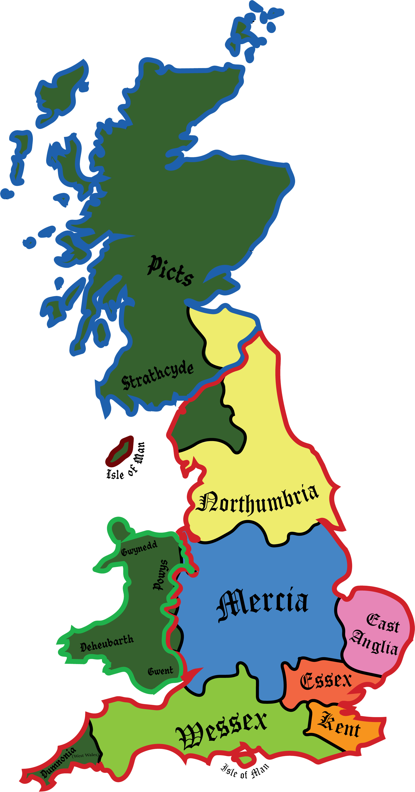
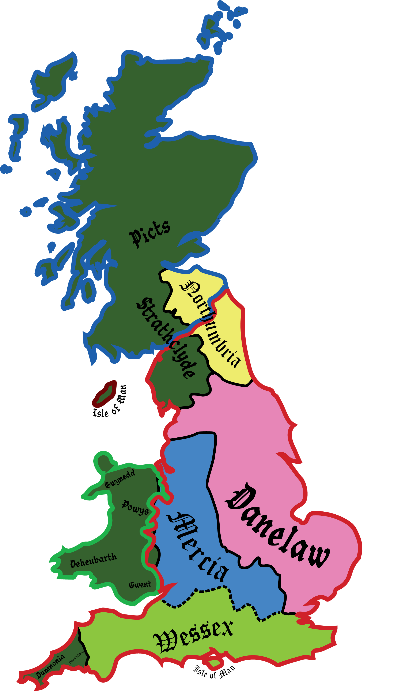

"Bede's" Northumbria
During Bede the Venerable's time, Northumbria was at its height in military, political, and cultural power. During the 7th and 8th centuries A.D. From this Northumbria came Bede the Venerable, a significant Northumbrian figure.

The Heptarchy refers to the seven English kingdoms between the 6th and 9th centuries A.D. The seven kingdoms were Northumbria, Mercia, East Anglia, Wessex, Kent, and Essex.
All the kingdoms had internal and intra-kingdom fighting, conquering, rebelling, opposing, and supporting political figures of each other's kingdoms. The end of the heptarchy occurred with the establishment of the kingdom of England in the 10th century A.D.
The kingdoms of the heptarchy had many notable figures, but perhaps the most notable was Alfred the Great, who saved the English identity against the Danish invaders, defeating Guthrum and establishing the Danelaw.
Northumbria is one of the oldest kingdoms of the English heptarchy, becoming a large military power in the 7th century A.D. However, its largest contribution was in religious and intellectual influence over the other heptarchy kingdoms. The Friesians laid the foundation for Northumbria (including all other Anglo-Saxon kingdoms), allowing the tribe of the Angles to settle in what is known as Northumbria. During the Danelaw period., Northumbria's control over land was severely diminished, but they continued to cause trouble to the Danes (vikings) that had conquered large swaths of southern Northumbria.
Important figures in Northumbrian history are The Venerable Bede (perhaps the most famous), Æthelfrith (unifier Northumbria), Edwin, Oswald, and Oswiu.
East Anglia consists of Anglo Germanic tribes, living on the east of modern day England, hence "East Anglia." Little is known of their first king, Raedwald (dying between 616A.D. and 628A.D.), but he became Christian while in Kent. During the 7th century, Raedwald and East Anglia was subservient to Kent and its king, Aethelberht, but later became independent.
Mercia was the west Anglo kingdom, and played a major role in the identity of England and was the major power between the 6th and 8th centuries. Along with Northumbria, it was the major opposition resistor to the Danish colonization and conquest of the Anglo Saxon kingdoms. During the 9th century A.D. Mercian power gave way to Wessex power.
Starting as an individual kingdom in the 6th century. They came from the Saxon tribes, and it was never a major power like Northumbria, Wessex, or Mercia. Most of the names of the kings of Essex started with the letter s. Essex's history with Christianity has been one of switching between Christianity and Paganism multiple times. Essex later became a subordinate to Wessex in the mid-9th century A.D.
Kent was formed by Jute tribes, and is the only heptarchy kingdom to do so. The migration of the Jutes began in the 5th century A.D. It never became as powerful as Mercia, Northumbria, or Wessex, and later was conquered by Mercia in the 8th century A.D. and by Wessex in the 9th century A.D. It did however hold influence towards other Anglo-Saxon kingdoms and the Christianization of the Anglo-Saxon kingdoms began in Kent in the late 6th and early 7th centuries A.D.
Wessex was established by Saxon tribes and perhaps is the kingdom to have the most obvious, direct and permanent changes in England. It was from the 9th and 10th centuries A.D. that Wessex expanded and conquered the Britons of Dumnonia (West Wales). It was under Mercia that English identity solidified in the 9th century, broke the Danish ability to conquer further of England, and established the English identity in the 10th century A.D. This was done under the Alfred the Great, who converted the Guthrum, king of the Danes, to Christianity.
During Bede the Venerable's time, Northumbria was at its height in military, political, and cultural power. During the 7th and 8th centuries A.D. From this Northumbria came Bede the Venerable, a significant Northumbrian figure.

Like the Anglo-Saxons before, Danish tribes (aka Vikings) invaded and settled in the British isles. The conquest of large swaths of modern day England by "The Great Summer Army" or "The Great Heathen Army." The holdings kept after the defeat of the Danish invaders became, through Alfred the Great, what is known as the Danelaw. At its height, in the 9th century, the Danish holdings stretched from southern Scotland, to East Anglia and Essex. At this time, Old English and Old Norse were dialects, allowing the Danes and Anglo-Saxons to communicate with each other. Old Norse influenced English through its pronouns, the introduction of the letter k, and the endings of locations. Common endings are -by,
-thorpe, -thwaite, and -gate.
Notable figures important that come from the Danelaw are Guthrum and Cnut the Great.